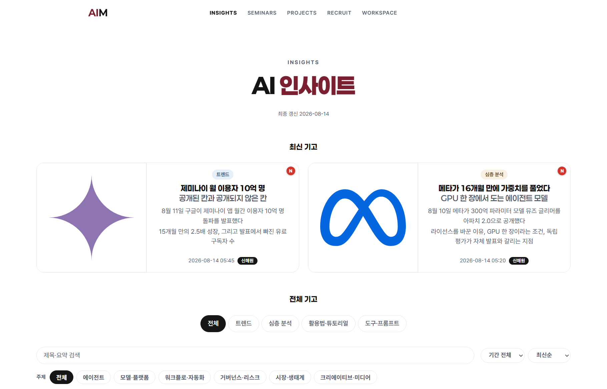

AI 활용 구조 3단
60분 · 정규 차시 전 예습용 · 도구 소개 아님
작업 지시문 5요소
컨텍스트 윈도·근거 선별
도구·권한·완료 조건
세 단을 통과한 상태 = 위임
파트 대표 아이콘 = 각 파트 디바이더에서 재등장 · 도입 3장은 파트 밖 4분
활용 단계 4칸 자가진단 · 지금 내 위치 1칸 표시
국내 근로자 생성형 AI 업무 활용 실태 3건①
간극의 변수 = 도구 등급이 아니라 질문·맥락·환경
같은 도구·같은 시간에도 결과가 갈리는 지점 = 세 단의 설계 여부
세 단을 통과한 상태 = 위임 · 도착점 확인 지점 = 완료 조건과 독립 검증
이 파트에서 얻는 것 = 검증이 기본기인 구조적 이유
토큰 = 모델이 처리하는 최소 단위 · 비용과 기억 용량의 기준
입력을 최소 단위로 분해
앞선 토큰 전체를 조건으로 사용
다음 후보마다 확률 산출
선택과 산출을 문장 끝까지 반복
"광운대 경영학부 ___" · 다음 토큰 후보
후보·확률 = 원리 설명용 예시값 · 실제 분포 아님
환각 = 사실과 다르거나 맥락에 어긋난 출력 · 발생 지점 2곳②
형식은 정상, 내용은 사실과 불일치
불확실한 답도 확신 어투로 출력
오늘 덱 전체에서 같은 뜻으로 사용 · 뒤 장에서 재등장
모델이 처리하는 최소 단위 · 비용과 용량의 계산 기준
답변 직전 참조 가능한 텍스트 총량 · 작업 기억
작업을 요청하는 자연어 입력 · 지시문
외부 문서를 검색해 근거와 함께 답을 생성하는 구성
도구 사용과 진행 순서를 스스로 정하는 실행 시스템
AI를 외부 시스템에 연결하는 공개 표준
정보시스템 발전 5단 · 앞 4칸은 전공 교과 범위③
운영 기록의 전산화
집계와 정기 보고서
모형 기반 분석
지표 대시보드
판단 보조에서 작업 수행으로
이 파트에서 얻는 것 = 결과를 가르는 지시문 구성 5요소
프롬프트 = 작업 지시문 · 다섯 칸이 비면 모델이 임의로 채운다
"[역할]로서 [맥락]을 참고해 [목표]를 [형식]으로, [제약] 안에서"
누구의 관점으로 쓸 것인가
끝났을 때 손에 남는 것
참고할 배경·원자료
표·개요·초안 등 출력 형태
분량·기간·금지 조건
같은 도구·같은 주제(AI 동향 정리)를 두 방식으로 요청한 결과 비교
범위·기준 없는 일반 나열 · 다시 시키는 왕복 반복
범위가 고정된 검토 가능한 초안 · 수정 지점 특정 가능
각 한계의 처방 = 2단 맥락과 3단 환경 · 파트 3·4의 근거
학습 시점 이후 사실 = 미보유 · 모르는 채로 문장 생성
처방 = 검색·자료 주입 (2단)
내 문서·데이터는 모델이 볼 수 없음 · 요약 요청 불가
처방 = 문서 연결 (2단)
절차 서술은 가능, 실행과 결과 확인은 불가
처방 = 도구·검증 절차 (3단)
이 파트에서 얻는 것 = 답변 직전 무엇을 보게 할지의 설계
한 번의 답변에 들어가는 텍스트 총량 · 이 안에 없는 것은 모델이 못 본다
응답 방식과 금지 조건 · 대화 내내 유지
붙여 넣은 문서·검색 결과 · 사실 판정의 원천
이번 차례에 시키는 작업 지시문
앞선 차례의 입력과 출력 · 길수록 자리 경쟁
RAG = 외부 문서를 검색해 근거와 함께 답을 생성하는 구성④
적용 예 = 학회 회칙 질문 봇 · 회칙·공지에서 조항을 찾아 조항 번호와 함께 응답
긴 맥락에서 가운데 배치된 근거는 반영률이 떨어진다⑤
가운데 구간 근거 누락 · 토큰 비용 상승
인용 정확도 상승 · 검토 지점 특정 가능
이 파트에서 얻는 것 = 위임의 완료 조건과 멈춤 장치
하네스 = 모델에 도구와 권한, 멈춤 규칙을 붙인 실행 환경⑥
검색·파일·브라우저·API를 실행 가능한 동작으로 연결
접근 범위를 작업에 필요한 최소로 고정
중간 산출을 보고 재지시 · 목표 이탈 교정
위험 명령 차단과 사람 승인 단계 · 되돌릴 수 없는 동작 앞에서 멈춤
강한 실행 권한일수록 필요한 것 = 멈춤의 경계 · 운영 권한은 기본값이 아니라 승인 대상⑫
모델 단독 = 문장 생성 · 네 요소 결합 = 작업 수행
같은 모델을 쓰는 두 사용 방식 비교 · 차이는 답의 길이가 아님
한 번의 답변까지
완료 조건 충족까지
실행 루프 5단 · 완료 조건 충족까지 순환⑦
STEP 5 → STEP 1 순환 · 종료 조건 = 완료 조건 충족 또는 사람의 중단
이 스터디 허브 운영 기록 · 지시 1줄에서 화면 반영까지의 실행 로그

같은 방식으로 운영 중인 기고 파이프라인 = 자료 수집 · 정리 · 출처 확인 · 초안
반복 업무의 형태 = 프롬프트 1개가 아니라 연결된 실행 구조
이 파트에서 얻는 것 = 지금 되는 범위와 사람이 남는 자리
공개 벤치마크 3종 · 확인 시점 2026-07-25
긴 작업일수록 발생률 상승 · 각 유형에 대응 동작이 붙는다
긴 작업에서 목표 이탈 · 남은 단계를 건너뛰고 조기 종료
대응 = 단계 분할과 중간 확인
대화 도중 주제 전환 시 정확도 평균 39% 하락⑪
대응 = 작업당 대화 분리
스스로 통과 판정 · 미완성 산출물을 완료로 보고
대응 = 사람의 독립 검증
실행이 넘어갈수록 앞뒤 두 지점의 비중 상승
위임 = 완료 조건 + 독립 검증
간극의 변수 = 질문 · 맥락 · 환경 세 단의 설계 · 도구 등급 아님
확인 지점 = 내 작업 1건에 완료 조건 문장 1줄 붙여 보기
본문 장에는 각주 번호만 표기 · 수치 확인 시점 2026-07-25